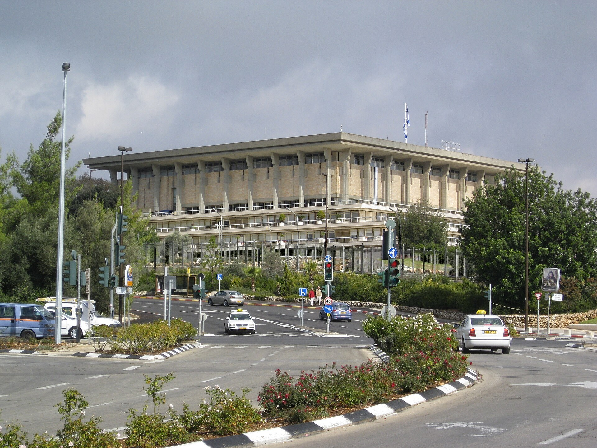

Israel's October 27 election: Netanyahu and Eisenkot neck and neck
Israel votes for the 120-seat Knesset. Polls show a near-tie between Likud and the Yashar party; the election unfolds against a fragile Gaza ceasefire.

On October 27, 2026, Israel holds its next election for the 120-seat Knesset. The vote is roughly a month away.
The main contenders
Prime Minister Benjamin Netanyahu's Likud faces its main challenge from former military chief of staff Gadi Eisenkot's Yashar party. Naftali Bennett's B'Yachad is also in the race.
The polls
Results vary. A five-poll average puts Likud at about 23 seats and Yashar at about 22; the right-wing/coalition bloc near 55 and the opposition near 51. A Kan 11 poll showed the two blocs tied at 52–52, while Channel 13 had the Eisenkot bloc leading with 52 to Netanyahu's 51. On suitability for prime minister, Eisenkot led 52% to 38% — a 14-point gap.
Against the Gaza backdrop
The vote unfolds in the shadow of the Gaza war. A ceasefire that took effect on October 10, 2025 under the first phase of a US-backed peace plan remains fragile; talks on the plan's second phase have stalled.
Both sides' words
In a pre-election security debate, Netanyahu warned from an air force base, "Do not mess with us, not now and not ever." Eisenkot responded that Israel's security must never be conflated with the election campaign, and that if the threats are real, the opposition leader should also be briefed.